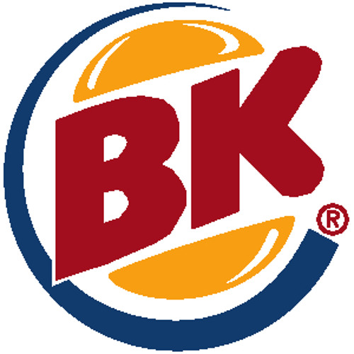
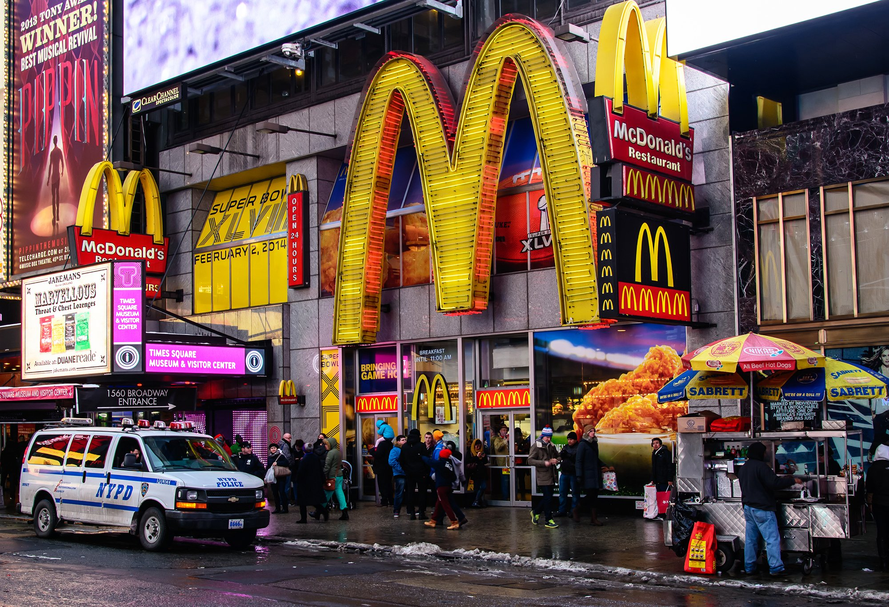

My Website
I like Chemistry and Math but I dislike English Literature and Gym :(. My achievements are being able to run more than 25 on the Pacer exam. I think CS class is very fun.
My fast food tastes:

The Best Fast Food |
The Worst Fast Food |
|  |
 |
I like these sports because they are fun to play!:
- Basketball is my favorite because I have played it for a long time and I like playing with my friends that also play basketball
- Soccer is my second favorite because I used to be on a soccer team and I played it. It is below basketball because running makes me tired
I like these colours in this order:
- Black is good because black clothes look cool B)
- Green is bad because it looks like vomit